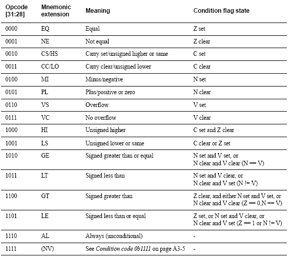

For more info, see the ARM922T DATASHEET
and the ARM QUICK REFERENCE
ARM Instructions work on 32 bit registers. There are 16 of
these, numbered r0 to r15. A few of them have special uses, the main
ones being: r15(Program Counter),r14(Return Address),r13(Stack Pointer).
They can also be specified using special register names
(r15=pc,r14=lr,r13=sp). Each instruction may be executed on some
condition, and most may also update the condition flags (by adding an
'S' to the end of the instruction).
Condition Values

Here is a list of some of the most commonly used instructions, and meanings for them:
| |
MOV r0,r1 | Move r1 to r0 |
MOV r0,r1,LSL #2 | Move r1 to r0, and shift it left by 2 |
MOV r0,r1,LSR r2 | Move r1 to r0, and shift it right r2 times |
MOV r0,#42 | Move the number 42 to r0 (This only works for some numbers) |
LDR r0,=42 | Move the number 42 to r0 (This works for all numbers) |
LDR r0,=my_table | Move the address of 'my_table' to r0 |
ADD r0,r1,r2 | Add r1 to r2 and put the result in r0 |
SUB r0,r1,r2 | Subtract r2 from r1 and put the result in r0 |
MUL r0,r1,r2 | Multiply r1 by r2 and put the
result in r0. You are not allowed to use the same register for the first
and second arguments. Strangely though, you may use the same register
for the first and third without problems. |
CMP r0,r1 | Compare r0 to r1 and update the flags |
B my_label | Start executing the code at my_label |
BL my_function | Branch and link. Executes code at my_function, but saves the next instruction's location to r14. Used for function calls. |
MOV r15,r14 | Returns from a function |
BEQ my_label | Start executing the code at
my_label IF on the previous comparison, the two values equaled each
other. If the comparison was instead 'MOVS r0,r1' or similar, it will
branch if r1 equalled zero. |
LDR r0,[r1] | Put the contents of memory location r1 into r0. the bottom two bits of r1 must be 0. |
LDRB r0,[r1] | Put the contents of the byte at memory location r1 into r0. |
STR r0,[r1] | Put r0 at memory location r1. the bottom two bits of r1 must be 0. |
STRB r0,[r1] | Put the least significant byte of r0 at memory location r1 |
STMFD sp!,{r4,r5} | Push r4 and r5 onto the
stack. Note: registers are pushed in their numerical order. NOT the
order you specify them in this instruction |
LDMFD sp!,{r4,r5} | Pop r4 and r5 off the
stack. Note: registers are popped in their numerical order. NOT the
order you specify them in this instruction |
Loop around a piece of code 42 times
MOV r0,#42
LOOP
...
SUBS r0,r0,#1
BNE LOOP
Get one bit from an array in memory
(at location r0 (returned in r0 as well))
ldr r1,=my_array
mov r2,r0,LSR #3
ldrb r3,[r1,r2]
and r2,r0,#7
mov r3,r3,LSR r2
and r0,r3,#1
Set one bit in an array in memory
(at location r0)
ldr r1,=my_array
ldrb r2,[r1,r0,LSR #3]
and r3,r0,#7
mov r4,#1
mov r3,r4,LSL r3
orr r2,r2,r3
strb r2,[r1,r0,LSR #3]
Call a function, preserving all registers
stmfd sp!,{r0-r12,lr}
bl my_function
ldmfd sp!,{r0-r12,lr}
|